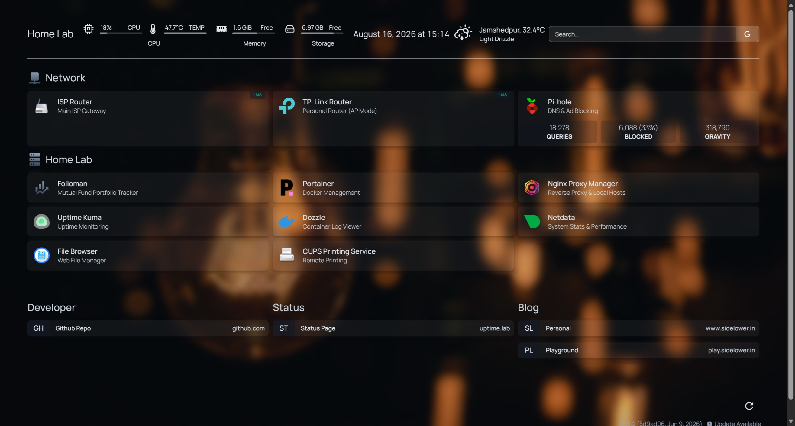

Home lab
HomeLab @ Jamshedpur
Notes on the Raspberry Pi 4 I run at home.

A Bit of History
I wanted a small always-on box that isn't a laptop, doesn't live in the cloud, and doesn't cost me a monthly bill. Somewhere to block ads network-wide, host a few personal tools, and poke at things without worrying about breaking a "real" server. A Pi 4 turned out to be more than enough.
What's running on it
Homepage
Network-wide ad and tracker blocking, sitting as the DNS for every device on the network.
Pi-hole
Network-wide ad and tracker blocking, sitting as the DNS for every device on the network.
Portainer
A dashboard over Docker — starting, stopping, and checking logs on containers without living in the terminal.
Nginx Proxy Manager
Reverse proxy in front of everything, so each service gets its own clean subdomain instead of a port number.
Uptime Kuma
Reverse proxy in front of everything, so each service gets its own clean subdomain instead of a port number.
Dozzle
Reverse proxy in front of everything, so each service gets its own clean subdomain instead of a port number.
Netdata
Reverse proxy in front of everything, so each service gets its own clean subdomain instead of a port number.
File Browser
Reverse proxy in front of everything, so each service gets its own clean subdomain instead of a port number.
CUPS Service
Reverse proxy in front of everything, so each service gets its own clean subdomain instead of a port number.
Folioman
A private mesh network back to the Pi, with subnet routing and split DNS so home services feel local from anywhere.
Tailscale
A private mesh network back to the Pi, with subnet routing and split DNS so home services feel local from anywhere.

What actually broke
Containers occasionally came up on the wrong ports after a reboot, fighting each other for the same address. Fixed by pinning explicit port bindings per service and giving each container a static entry in the compose file instead of leaving it to chance. Small annoyance, good excuse to actually understand how Docker networking works.
What's next
Slowly adding more self-hosted tools as I need them, and treating the whole thing as a low-stakes place to practice — the kind of practice that's hard to get away with on anything that actually matters.
Find more details here - Link